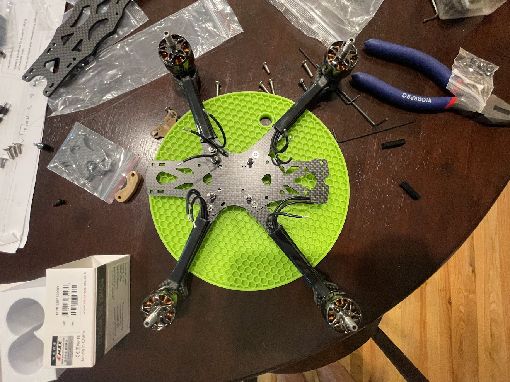
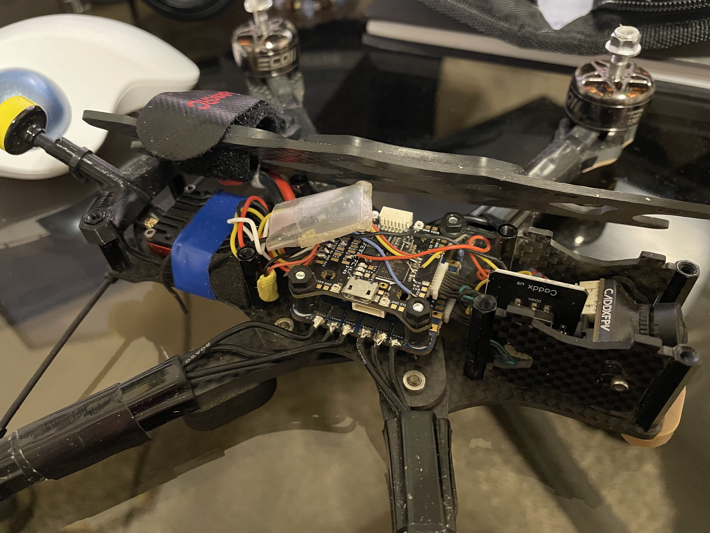
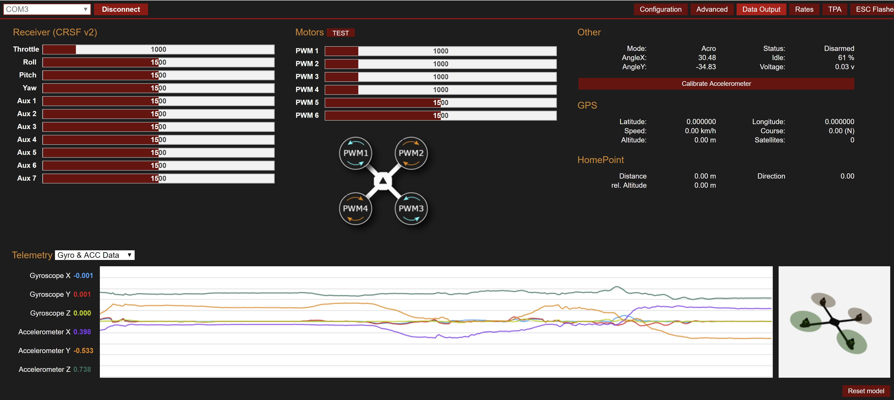

As a kid, I was fascinated by remote control planes. I spent a lot of time flying small models at the park and occasionally visiting the RC airfield with my neighbor, an Air Force veteran. My curiosity deepened when I came across videos of pilots flying radio-controlled quadcopters through first-person view (FPV) goggles. The idea of experiencing flight from the perspective of the aircraft captivated me. This project is the culmination of that dream by combining my love for aviation, engineering, and the desire to push the boundaries of what I could create.
I started this build by researching the many different components a quadcopter uses and their functions. I also read up on the different systems that run on a quadcopter and their harmonic integration. I gathered all the required parts I needed and got to soldering.

I started by making a diagram detailing where each component would go inside the quadcopter and where all wires were to be run. Beginning with the motors, followed shortly by the electronic speed controller (ESC) and flight controller, I wired each component together. I finished the build by wiring the control link system as well as the video transmitter and camera.

Once everything was correctly wired together, I plugged the quadcopter into my computer and began to install the correct software onto the KISS flight controller and began tuning the PID's.

After many hours of tuning the flight controller, I tested the video system as well as the control link, and when everything was in working order I headed out to the field for a test flight. After testing (and crashing) I went back and continued to tune the PID control values until the system was comfortable for me to control. I also had to address certain problems that arose after flying, such as airflow to the video transmitter as well as the strength of some of the 3D printed parts.